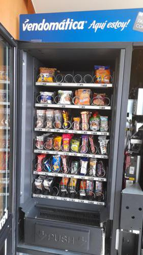
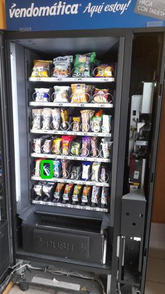

Antes de AbastecerNo se detectaron espirales vacios.

id 410.675 |
Luego de AbastecerSe detectó 1 espiral vacio.

id 410.676 |
|
| Fecha |
Reporte |
Vacios ANT |
% Abast |
% Quiebre |
Sum QTY |
Rotación Diaria |
Abast hace (días) |
| 14-08-2021 |
Viendo |
0 |
5.2 |
- |
26 |
26 |
1 |
| 13-08-2021 |
Ver |
5 |
40.4 |
12.5 |
202 |
202 |
1 |
| 12-08-2021 |
Ver |
2 |
30.0 |
5.0 |
150 |
150 |
1 |
| 11-08-2021 |
Ver |
0 |
2.2 |
- |
11 |
11 |
1 |
| 10-08-2021 |
Ver |
2 |
32.4 |
5.0 |
162 |
162 |
1 |
| 09-08-2021 |
Ver |
3 |
19.6 |
7.5 |
98 |
49 |
2 |
|
|
|
Se abasteció la máquina con:
Total de 26 unidades de 3 productos.
| Qty. |
Producto |
SubFamilia |
Familia |
| 6 |
Andifrut Durazno Tetra 20 |
Jugos |
Tetras |
| 10 |
Papas Fritas Tika Patagon |
Salados |
Snack |
| 10 |
Papas Mediterraneas Orega |
Snack |
Snack |
| Productos más abastecidos en últimas 6 semanas:
| Nro. Abast |
Qty/Abast |
Producto |
Abast hace (días) |
Fecha |
| 36 |
12 |
Negrita 20 Gr |
1 |
13-08-2021 |
| 35 |
10 |
Super Ocho Clasico 24 Gr |
1 |
13-08-2021 |
| 30 |
12 |
Brownie Choc 24Un Nutrabi |
2 |
12-08-2021 |
| 27 |
9 |
Snickers 53 Grs |
2 |
12-08-2021 |
| 26 |
7 |
Andifrut Piña Tetra 200 C |
1 |
13-08-2021 |
| Productos menos abastecidos en últimas 6 semanas:
| Nro. Abast |
Qty/Abast |
Producto |
Abast hace (días) |
Fecha |
| 1 |
4 |
Vitamin Water Energy 500 |
11 |
03-08-2021 |
| 1 |
6 |
Love Lemon Limonada Origi |
7 |
07-08-2021 |
| 1 |
6 |
Love Lemon Limonada Menta |
11 |
03-08-2021 |
| 1 |
10 |
Vivo Shot Check 21X30 G |
11 |
03-08-2021 |
| 1 |
10 |
Galleta Conquista 45 Gr |
11 |
03-08-2021 |
|
|